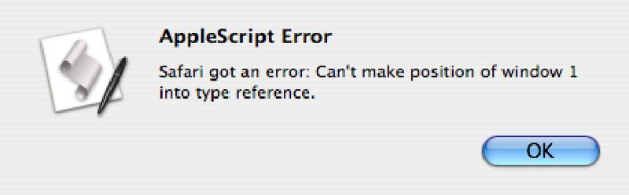

The Principles Remain the Same
In this chapter, you’ve been introduced to the fundamental principles and structures of the AppleScript language. These principles include the following essential concepts:
- Scriptable objects have properties with corresponding values.
- Scriptable objects can also contain other scriptable objects that also have properties with corresponding values.
- The values of the properties of scriptable objects can be read and sometimes altered.
In learning to apply these principles, you wrote scripts to control the appearance of Finder windows in the Finder application by accessing and changing the values of their properties and by using standard verbs, such as close and open, to control their display. As stated earlier in this chapter, the principles used in those scripts apply to all scriptable applications, not just the Finder application.
Let’s see whether that statement is indeed true.
In a new Finder window, navigate to your Applications folder, and launch the Safari application. After it has finished starting up, enter, compile, and run the following script in a new script window in Script Editor.

tell application "Safari" to close every window
Any open browser windows in the Safari application are immediately closed. As with the scripts you used with the Finder, note that this script is a tell statement containing the necessary two elements: a reference to the targeted objects (in this case the open browser windows) and the action to be performed (close).
Next, let’s use the open location command to open a Web page with the following script (assuming your computer is connected to the Internet).

tell application "Safari" to open location "http://automator.us"
A new browser window containing the specified Web site is displayed. Let’s see whether we can use the properties of the browser window to control where the window appears on the screen. Enter and run the following script to get the position coordinates of the new window.

tell application "Safari" to get the position of the front window
Instead of getting a list of the horizontal and vertical offsets of the window, the Script Editor selects the word position and displays an error message in this dialog:
{kind=link}

An error dialog displayed as a sheet attached to a script window in Script Editor.
The error message states (in a slightly convoluted way) that a script can’t refer to the position of a window in Safari. This is because, like many Mac OS X applications, Safari does not support the use of the position property for windows in the same manner as the Finder does. Instead, try using the bounds property to get the coordinates of the browser window. Enter and run this script:

tell application "Safari" to get the bounds of window 1
--> returns something like: {184, 36, 924, 857}
Most scriptable Mac OS X applications support the bounds property for getting and setting window dimensions. You can use it to change the position and shape of the browser window. Try this script:

tell application "Safari" to set the bounds of the front window to {0, 22, 800, 1024}
The Safari browser window is now sized and positioned to fit in the left section of the computer screen. Note that if you provide a vertical coordinate that is larger than the screen is tall, Safari automatically adjusts the vertical display of a browser window so that it doesn’t go below the Dock or the bottom of the screen. Very convenient.
So as you’ve now seen, you can use AppleScript to close, open, and resize Safari windows. And the point is?
The principles you learned scripting Finder windows apply to other scriptable applications and objects as well.
Just as the Finder application has scriptable window elements, so does the Safari application. And as with Finder windows, windows in Safari have properties that have corresponding values that can be read and sometimes changed. A browser window has a bounds property, just like a Finder window, whose value is a list of four numbers describing the location of its top-left corner and bottom-right corner on the screen.
TIP: If you’ve ever wanted to be able to make your browser window fill your computer’s display, here’s a script that uses the result of a tell statement that gets the bounds of the Finder Desktop to resize the frontmost Safari window to fill the screen:
 A script that sizes the open Safari browser window to fill the screen.
A script that sizes the open Safari browser window to fill the screen.
tell application "Finder" to get the bounds of the window of the desktop
tell application "Safari" to set the bounds of the front window to ¬
{0, 22, (3rd item of the result), (4th item of the result)}
You’ll learn more about how to pass information between script statements in Chapter 8, Data Containers, Operators, and Coercions.
Principles Remain Constant?
Let’s continue validating the universal nature of AppleScript principles. Navigate to the Applications folder, and open the QuickTime Player application.
Next, open a movie file by choosing Open Movie in New Player from the File menu and locating a movie file on your computer. Any standard QuickTime movie will do.
Like the Finder application, QuickTime Player contains other scriptable elements besides windows, one of which is the movie object. As with the scripts you wrote to query Finder windows, you can use the get verb to access the values of the properties of the scriptable objects or elements of QuickTime Player.
NOTE: The terms object and element are used interchangeably in describing scriptable items that belong to other scriptable items, such as Finder windows belonging to the Finder application or movie windows belonging to the QuickTime Player application.

tell application "QuickTime Player" to get name of the front document
-->returns: "New iMac Ad" (or the name of the movie you opened)
NOTE: In QuickTime 7.2 the term movie was replaced by the term document, and any scripts written using movie will be changed when they are compiled. They will run the same, but the term document will appear instead of movie. For compatibility with Tiger, the term movie is used in these example scripts.
The result of the script is the value of the name property of a movie. Now, try this script:

tell application "QuickTime Player" to get the duration of the front document
-->returns: 17998 (the number of frames comprising the movie)
The result of the script is the value of the duration property of a movie expressed as a number indicating the number of frames in the movie.
As with other scriptable applications, you can use the set verb to change the value of the property of an object. The following script changes the value of the current time property of a movie to move the playback cursor to a specified point in the movie.

tell application "QuickTime Player" to set the current time of the front document to 94900
QuickTime Player also responds to these commands for controlling the playback of movies:

tell application "QuickTime Player" to play the front movie

tell application "QuickTime Player" to stop the front movie
The AppleScript principles that work with the Finder application work for the QuickTime Player application as well. Let’s try applying them to one more application.
iTunes
Quit QuickTime Player without saving any changes, and open the iTunes application.
Like the other scriptable applications, iTunes contains scriptable elements or objects that contain other scriptable elements. If you are familiar with iTunes, you know the application has playlists, which are collections of tracks or songs. The master playlist for the application, containing all tracks, is the library playlist.
Here’s the basic object hierarchy for the iTunes application:
iTunes Application > playlist > trackIn other words, tracks are contained in playlists that are contained in the iTunes application.
As with the Finder and QuickTime Player applications, each one of the scriptable elements of iTunes has properties with corresponding values. Let’s try accessing some of the properties of the track object with the tell statement shown in the follwoing script:

tell application "iTunes" to get the name of the last track of the first library playlist
--> returns: "Ave Maria" (whatever you have in your iTunes database)
Remember, a tell statement has two components: a reference to the target object and the action to be performed. In this example, the target object is the last track of the first library playlist, and the action to be performed is to get the value of its name property.
Now extract the value of other track properties using the following script:
 Two versions of a script for extracting the value of an iTunes property.
Two versions of a script for extracting the value of an iTunes property.
tell application "iTunes"
tell the first library playlist
get the duration of the last track
--> returns: 281 (the length of the track in seconds)
end tell
end tell
tell application "iTunes"
tell the first library playlist
get the artist of the last track
--> returns: "Aaron Neville"
end tell
end tell
As these examples demonstrate, playlists contain tracks that have properties, such as name, duration, artist, album, and so on.
The iTunes application, like the Finder and QuickTime Player, responds to AppleScript commands to perform actions with its scriptable objects. See, for example, the following script:
 A script for playing a specific track in iTunes.
A script for playing a specific track in iTunes.
tell application "iTunes" to play the last track of the first library playlist
In this example, the verb play is used to initiate the playing of the track referenced as its target. To stop the iTunes application, use the stop verb. It doesn’t require a reference to a particular track because it targets the iTunes application, which only one track can play at a time.

tell application "iTunes" to stop
What’s Next?
Congratulations on completing your introduction to the world of AppleScript. As you’ve seen, it’s an easy but powerful way to control the actions of applications.
If you’ve understood the concepts presented in this chapter, you’re well on your way to becoming a powerful scripter, because the lessons presented here will be used to create even more interesting and useful automation tools.
In the next chapter, you’ll discover how to access all of the scriptable objects, properties, and commands of any scriptable application by reading its terminology dictionary. See you there!